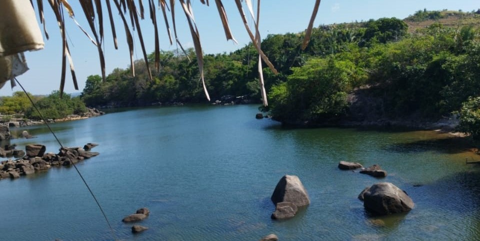
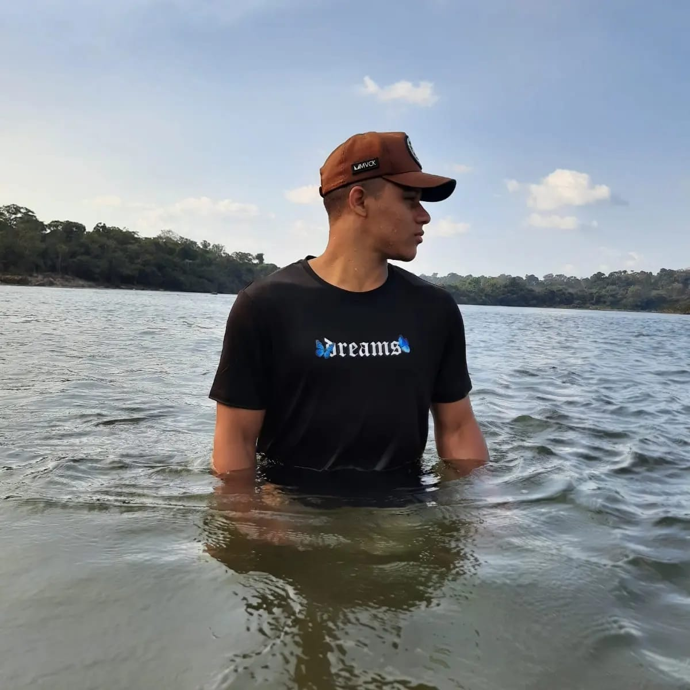
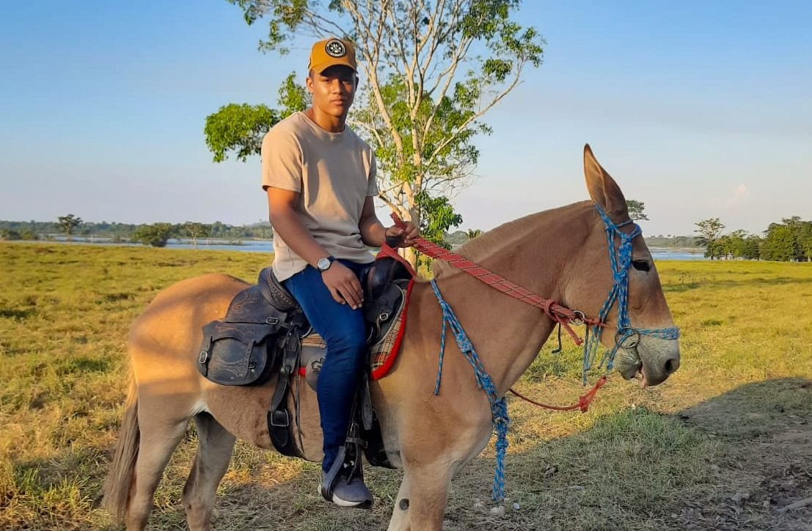
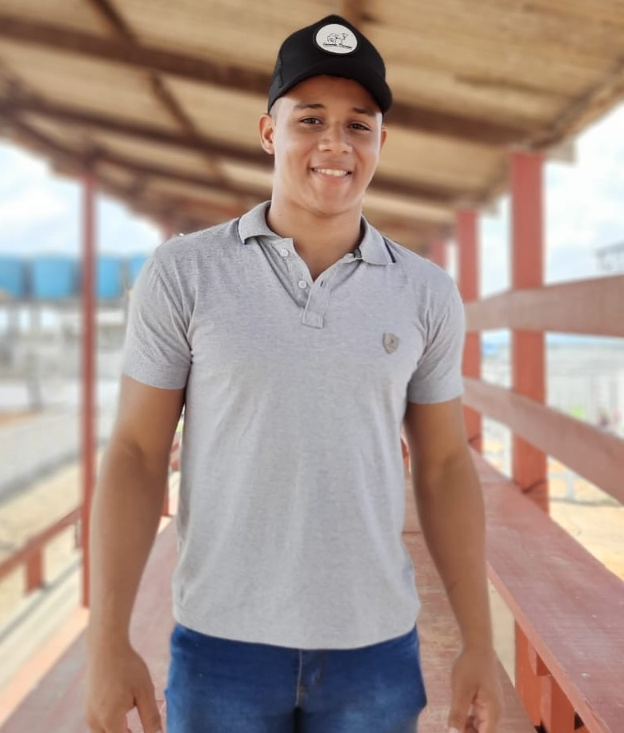

Olá, tudo bem !! Irei falar pouco sobre mim,tenho 22 anos e nasci de Altamira, uma pequena cidade do Pará no dia 11 de novembro de 2000. Aos 6 anos me mudei com minha mãe para município chamado Brasil Novo, aos 15 voltei a morar com meu pai e, aos 16 terminei meus estudos com 18 anos entrei para o exército, onde servi por 4 anos. Em vista disso tomei a decisão de me mudar, mudei para toledo-pr aonde estou cursando TSI.Por enquanto não estou trabalhando decidi foca pouco no curso e depois ir atras de estágio.

Tayllo Neres de Sousa
Cabeça erguida, porque o seu caminho é a subida.!
Galeria
Aqui você encontrará um refúgio tranquilo, repleto de conforto e bem-estar para recarregar minhas energias!!
{kind=link}
{kind=link}
{kind=link}
{kind=link}

Hobbys
Andar a cavalo pelo simples fato de sentir Liberdade montando a cavalo pode fazer com que voce se sinta livre e conectado natureza. A sensacao de estar em cima de um animal e explorar o ambiente ao meu redor pode ser incrivel. Gosto de assistir anime tipos one piece, kimetsu no yaiba, naruto, tokyo revengers, etc. Me traz otimos momentos assistir. Outros series sobrenatural, vikins, teenwolf, peaky blinders, game of thrones, the witcher e lupin, etc. Ouvir musica pelo simples fato de uma experiência profundamente pessoal e emocional Quando escuto música, posso ser transportado para um estado, onde os problemas e preocupações do dia a dia parecem desaparecer por um momento. A música tem o poder de envolver em uma atmosfera diferente, levando a diferentes emoções. correr, nadar, nossa amo uma praia, entre outras coisas.

Planos
A planos para futuro tenho muitos um deles e ser futuro veterinario, viver intensamente, conhecer varios lugares Sabe aquela conversa honesta que você tem com os seus amigos na mesa de um bar? É mais ou menos isso que eu gosto sentar e bater papo descontraído, ou deitar por um fone e viajar para lugares bom, uma praia, ou roda de amigos, um churrasco de familía aos fins de semana.

Frases
Difícil? Não se preocupe! É apenas um sinal de que você está no caminho certo. Grandes desafios só são dados a quem sabe que pode vencê-los. Tente de novo. Fracasse de novo, mas fracasse melhor! Imagine uma nova história para sua vida, e acredite nela. Toda conquista começa com a decisão de tentar. Isso está em suas mãos... Comemore os seus sucessos. Veja com humor os seus fracassos que te levarão até lá. Cabeça erguida, porque o seu caminho é a subida.